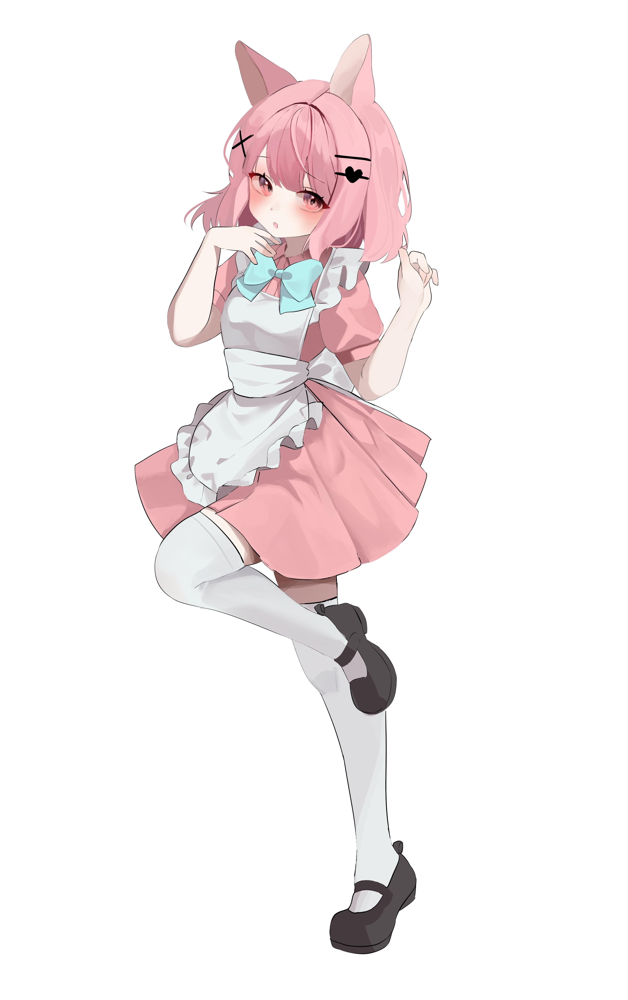

아티스트 목록

KIYOLiVE Artists
Hanasaki Sion 花咲しおん
달에 있는 루나리안 플로르 왕국의 공주. 왕국을 살릴 ‘감정의 꽃’을 찾아 지구에 왔습니다. 시온에게 노래와 방송은 사람들과 이야기를 나누며 새로운 감정을 만나는 시간입니다.
Debut schedule
2027년 1월 4일 데뷔 예정. 노래와 토크로 첫 인사를 준비하고 있어요.
Music
2025년 6월 26일, 시온이 첫 영상을 공개했습니다.